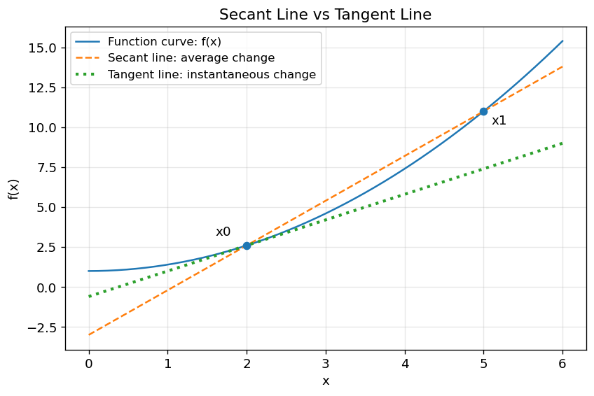
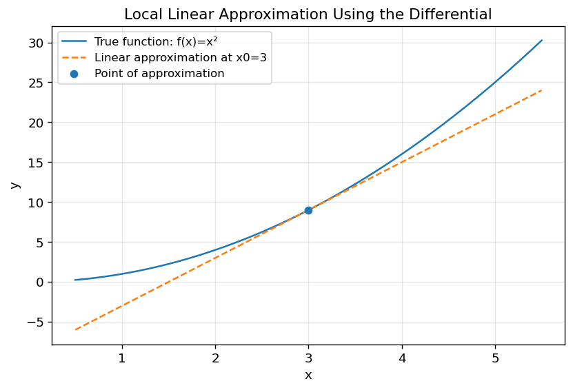
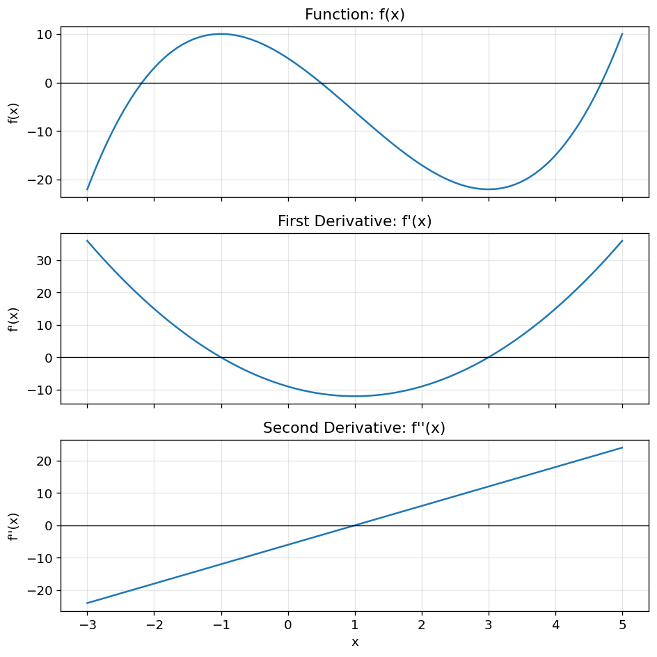
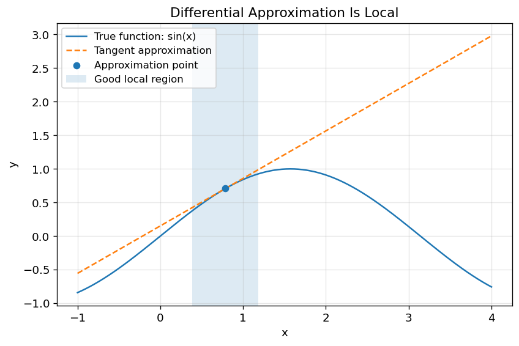
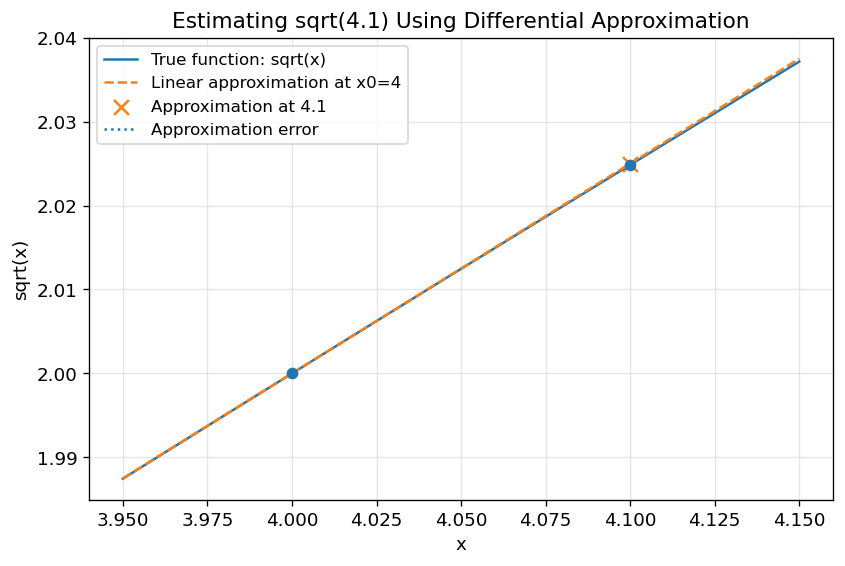
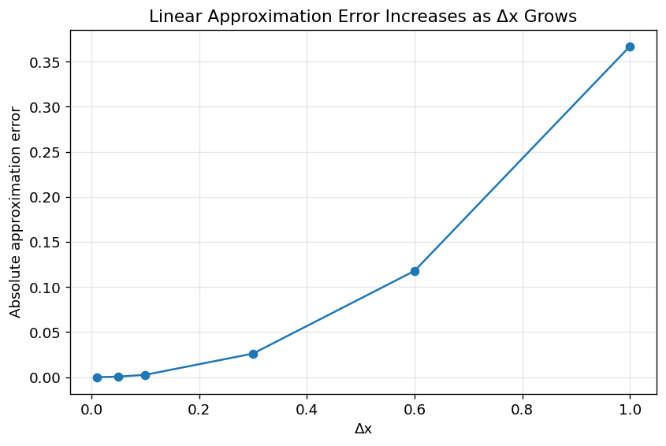

4. Differential and Derivative: Understanding Local Change, Tangent Lines, and Approximation#
4.1. 微分与导数：理解局部变化、切线斜率与近似计算#
4.2. Learning Objectives#
After reading this chapter, you should be able to:
Explain the difference between average rate of change（平均变化率） and instantaneous rate of change（瞬时变化率）.
Understand the derivative definition from the difference quotient（差商）.
Interpret the derivative as the slope of a tangent line（切线）.
Use the differential formula \(dy = f'(x)\,dx\) for local linear approximation（局部线性近似）.
Apply core derivative rules, including product rule, quotient rule, chain rule, implicit differentiation, and parametric differentiation.
Use first and second derivatives to study monotonicity, extrema, convexity, and concavity.
Use Python to visualize derivative concepts.
4.3. Why This Topic Matters#
Many real problems are not only about values, but about how values change.
For example:
In
physics,velocityis the rate of change of position.In
economics,marginal costis the rate of change of total cost.In
machine learning,gradient descentusesderivativesto reduce aloss function.In
GIScience, aslope surfacedescribes howelevationchanges over space.In
risk analysis, we may ask how much flood risk changes when rainfall increases slightly.
Suppose we have a function:
A simple question is:
What is the value of \(y\) when \(x = 3\)?
But a deeper question is:
If \(x\) changes slightly near 3, how fast does \(y\) change?
This second question is the core motivation for derivative（导数） and differential（微分）.
The derivative tells us the local rate of change.
The differential uses that rate to estimate the small change in the output.
4.4. Figure Demo 1: Average Change vs Instantaneous Change#
This figure shows the core motivation: a secant line measures average change over an interval, while a tangent line measures local change at one point.
import numpy as np
import matplotlib.pyplot as plt
plt.rcParams.update({
"font.size": 11,
"axes.titlesize": 13,
"axes.labelsize": 11,
"legend.fontsize": 10,
"figure.dpi": 120
})
def f(x):
return 0.4 * x**2 + 1
def df(x):
return 0.8 * x
x = np.linspace(0, 6, 300)
x0 = 2
x1 = 5
y0 = f(x0)
y1 = f(x1)
# Secant line through (x0, f(x0)) and (x1, f(x1))
secant_slope = (y1 - y0) / (x1 - x0)
secant_line = y0 + secant_slope * (x - x0)
# Tangent line at x0
tangent_slope = df(x0)
tangent_line = y0 + tangent_slope * (x - x0)
plt.figure(figsize=(8, 5))
plt.plot(x, f(x), label="Function curve: f(x)")
plt.plot(x, secant_line, "--", label="Secant line: average change")
plt.plot(x, tangent_line, ":", linewidth=2.5, label="Tangent line: instantaneous change")
plt.scatter([x0, x1], [y0, y1], zorder=5)
plt.annotate("x0", (x0, y0), xytext=(x0-0.4, y0+0.6))
plt.annotate("x1", (x1, y1), xytext=(x1+0.1, y1-0.8))
plt.xlabel("x")
plt.ylabel("f(x)")
plt.title("Secant Line vs Tangent Line")
plt.legend()
plt.grid(True, alpha=0.3)
plt.show()

4.4.1. What this figure teaches:#
The secant line uses two separated points and gives an average slope. The tangent line touches the curve locally and gives the derivative at a point.
4.5. Big Picture Intuition#
Imagine you are zooming in on a smooth curve.
From far away, the curve may look strongly curved.
But if you zoom in near one point, the curve begins to look almost straight.
That local straight line is the tangent line.
The derivative is the slope of this tangent line.
So the derivative answers:
Near this point, if \(x\) changes a little, how much does \(y\) change?
The differential goes one step further:
It says:
If \(x\) changes by a tiny amount \(dx\), then \(y\) changes by approximately \(f'(x)\,dx\).
4.5.1. A useful memory:#
Derivative = local slope
Differential = estimated small change
Tangent line = local linear model
4.6. Formal Definition and Core Equations#
4.6.1. Difference Quotient#
Suppose:
At a point \(x_0\), if \(x\) changes by \(\Delta x\), then the change in \(y\) is:
The average rate of change is:
This is the slope of the secant line.
4.6.2. Derivative#
The derivative is the limit of the average rate of change as \(\Delta x\) approaches 0:
where:
\(f'(x_0)\) is the derivative at \(x_0\)
\(\Delta x\) is a small change in \(x\)
\(\Delta y\) is the corresponding change in \(y\)
the limit means that the interval becomes infinitely small
In words:
The derivative is the instantaneous rate of change of \(f(x)\) at \(x_0\).
4.6.3. Differential#
Once we know the derivative, we define the differential:
For a small but finite change \(\Delta x\), we often write:
Therefore:
This is called local linear approximation（局部线性近似）.
4.7. How It Works Step by Step#
Suppose:
and we want to understand how the function changes near:
4.7.1. Step 1: Compute the function value#
4.7.2. Step 2: Compute the derivative#
So:
This means near \(x = 3\), the function changes at about 6 units of \(y\) for each 1 unit of \(x\).
4.7.3. Step 3: Use the differential#
If:
then:
Therefore:
The true value is:
So the approximation is close.
4.8. Figure Demo 2: Local Linear Approximation#
This demo compares the true function and its tangent-line approximation.
import numpy as np
import matplotlib.pyplot as plt
def f(x):
return x**2
def df(x):
return 2*x
x0 = 3
y0 = f(x0)
slope = df(x0)
def linear_approx(x):
return y0 + slope * (x - x0)
x = np.linspace(0.5, 5.5, 300)
plt.figure(figsize=(8, 5))
plt.plot(x, f(x), label="True function: f(x)=x²")
plt.plot(x, linear_approx(x), "--", label="Linear approximation at x0=3")
plt.scatter([x0], [y0], zorder=5, label="Point of approximation")
plt.xlabel("x")
plt.ylabel("y")
plt.title("Local Linear Approximation Using the Differential")
plt.legend()
plt.grid(True, alpha=0.3)
plt.show()

4.8.1. What this figure teaches:#
The tangent line is very accurate near \(x_0=3\), but becomes less accurate as we move farther away.
Differential approximation is local, not global.
4.9. Where Do These Derivative Rules Come From?#
Before memorizing derivative rules, it is useful to see that they are not magic formulas. Most basic derivative rules come from the formal definition of derivative:
This definition says:
To find the derivative, slightly perturb \(x\), observe how much \(f(x)\) changes, divide by the input change, and then let the input change become infinitely small.
Let us use this idea to derive the Power Rule（幂函数求导法则）.
4.10. Deriving the Power Rule from a Simple Example#
Suppose:
By the derivative definition:
Substitute \(f(x) = x^2\):
Expand the square:
Cancel \(\Delta x\):
Now let \(\Delta x \to 0\):
So:
4.11. Common Derivative Rules#
Rule |
Condition / Form |
Derivative |
Example |
|---|---|---|---|
Constant Rule |
\(y = C\) |
\(y' = 0\) |
— |
Power Rule |
\(y = x^n\) |
\(y' = n x^{n-1}\) |
\((x^4)' = 4x^3\) |
Product Rule |
\(y = u(x)v(x)\) |
\(y' = u'v + uv'\) |
\(y = x^2 \sin x \Rightarrow y' = 2x \sin x + x^2 \cos x\) |
Quotient Rule |
\(y = \dfrac{u(x)}{v(x)}\) |
\(y' = \dfrac{u'v - uv'}{v^2}\) |
— |
Chain Rule |
\(y = f(g(x))\) |
\(\dfrac{dy}{dx} = \dfrac{dy}{du} \cdot \dfrac{du}{dx}\), \(u=g(x)\) |
\(y = e^{-2x} \Rightarrow y' = -2e^{-2x}\) |
4.12. Implicit Differentiation#
Sometimes \(y\) is not isolated as \(y = f(x)\). Instead, \(x\) and \(y\) appear together.
4.12.1. Example 1#
Given:
Differentiate both sides with respect to \(x\):
Group the \(y'\) terms:
So:
4.12.2. Key Rule#
Whenever you differentiate a term involving \(y\), multiply by \(y'\), because \(y\) is itself a function of \(x\).
4.12.3. Example 2#
Given:
Differentiate:
Solve for \(y'\):
4.13. Parametric Differentiation#
Sometimes \(x\) and \(y\) both depend on a third variable \(t\):
Then:
4.13.1. Example#
Compute derivatives:
So:
At \(t = 1\):
4.14. Higher-Order Derivatives#
The first derivative tells us the slope:
The second derivative tells us how the slope changes:
4.14.1. Example#
4.14.2. Interpretation#
\(f'(x) > 0\): function is increasing
\(f'(x) < 0\): function is decreasing
\(f''(x) > 0\): curve bends upward (concave up)
\(f''(x) < 0\): curve bends downward (concave down)
4.15. Figure Demo 4: Function, First Derivative, and Second Derivative#
This figure shows how \(f(x)\), \(f'(x)\), and \(f''(x)\) describe different aspects of the same function.
import numpy as np
import matplotlib.pyplot as plt
def f(x):
return x**3 - 3*x**2 - 9*x + 5
def df(x):
return 3*x**2 - 6*x - 9
def d2f(x):
return 6*x - 6
x = np.linspace(-3, 5, 400)
fig, axes = plt.subplots(3, 1, figsize=(8, 8), sharex=True)
axes[0].plot(x, f(x))
axes[0].axhline(0, color="black", linewidth=0.8)
axes[0].set_title("Function: f(x)")
axes[0].set_ylabel("f(x)")
axes[0].grid(True, alpha=0.3)
axes[1].plot(x, df(x))
axes[1].axhline(0, color="black", linewidth=0.8)
axes[1].set_title("First Derivative: f'(x)")
axes[1].set_ylabel("f'(x)")
axes[1].grid(True, alpha=0.3)
axes[2].plot(x, d2f(x))
axes[2].axhline(0, color="black", linewidth=0.8)
axes[2].set_title("Second Derivative: f''(x)")
axes[2].set_xlabel("x")
axes[2].set_ylabel("f''(x)")
axes[2].grid(True, alpha=0.3)
plt.tight_layout()
plt.show()

4.15.1. What this figure teaches:#
The original function shows the curve.
The first derivative shows where the function increases or decreases.
The second derivative shows how the curve bends.
4.16. Assumptions, Strengths, Weaknesses, and Trade-offs#
4.16.1. Assumptions#
Derivative-based reasoning usually assumes that the function is:
continuous（连续） near the point of interest
differentiable（可导） at the point of interest
locally smooth enough that a tangent line is meaningful
If a function has a sharp corner, jump, or vertical tangent, the derivative may not exist or may not behave nicely.
4.16.2. Strengths#
Derivatives are powerful because they allow us to:
measure local change
approximate complicated functions locally
find
maximaandminimaanalyze increasing/decreasing behavior
study curvature
support optimization methods such as gradient descent
4.16.3. Weaknesses#
Derivatives can be misleading when:
the function is not smooth
the change in \(x\) is too large
the derivative is interpreted globally rather than locally
symbolic differentiation becomes too complicated
the model function itself is wrong
4.16.4. Trade-off#
The main trade-off is:
Local accuracy vs global validity
Derivatives provide excellent local approximations, but they may fail to describe behavior far away from the point of interest.
4.17. Figure Demo 5: Local Approximation Works Nearby but Fails Far Away#
import numpy as np
import matplotlib.pyplot as plt
def f(x):
return np.sin(x)
def df(x):
return np.cos(x)
x0 = np.pi / 4
y0 = f(x0)
slope = df(x0)
def tangent(x):
return y0 + slope * (x - x0)
x = np.linspace(-1, 4, 400)
plt.figure(figsize=(8, 5))
plt.plot(x, f(x), label="True function: sin(x)")
plt.plot(x, tangent(x), "--", label="Tangent approximation")
plt.scatter([x0], [y0], zorder=5, label="Approximation point")
plt.axvspan(x0 - 0.4, x0 + 0.4, alpha=0.15, label="Good local region")
plt.xlabel("x")
plt.ylabel("y")
plt.title("Differential Approximation Is Local")
plt.legend()
plt.grid(True, alpha=0.3)
plt.show()

4.17.1. What this figure teaches:#
The tangent line approximates the curve well near the chosen point, but the error grows farther away.
4.18. Worked Toy Example#
Estimate:
using differential approximation.
4.18.1. Step 1: Choose the function#
4.18.2. Step 2: Choose a nearby easy point#
Use:
because:
4.18.3. Step 3: Compute the derivative#
At \(x_0 = 4\):
4.18.4. Step 4: Compute the small change#
4.18.5. Step 5: Apply differential approximation#
The true value is about:
So the approximation is very accurate.
4.19. Figure Demo 6: Worked Example Visualization#
import numpy as np
import matplotlib.pyplot as plt
def f(x):
return np.sqrt(x)
def df(x):
return 1 / (2 * np.sqrt(x))
x0 = 4
x_target = 4.1
y0 = f(x0)
approx_target = y0 + df(x0) * (x_target - x0)
true_target = f(x_target)
x = np.linspace(3.95, 4.15, 300)
tangent = y0 + df(x0) * (x - x0)
plt.figure(figsize=(8, 5))
plt.plot(x, f(x), label="True function: sqrt(x)")
plt.plot(x, tangent, "--", label="Linear approximation at x0=4")
plt.scatter([x0, x_target], [y0, true_target], zorder=5)
plt.scatter([x_target], [approx_target], marker="x", s=80, label="Approximation at 4.1")
plt.vlines(x_target, approx_target, true_target, linestyles=":", label="Approximation error")
plt.xlabel("x")
plt.ylabel("sqrt(x)")
plt.title("Estimating sqrt(4.1) Using Differential Approximation")
plt.legend()
plt.grid(True, alpha=0.3)
plt.show()
print("Approximation:", approx_target)
print("True value:", true_target)
print("Absolute error:", abs(true_target - approx_target))

Approximation: 2.025
True value: 2.0248456731316584
Absolute error: 0.00015432686834149223
4.20. Python Lab: Derivatives, Tangent Lines, and Approximation Error#
In this lab, we will:
define a function
compute its derivative
plot the tangent line
compare approximation error for different \(\Delta x\) values
We use:
and:
4.20.1. Lab Code#
import numpy as np
import pandas as pd
import matplotlib.pyplot as plt
def f(x):
return np.sin(x)
def df(x):
return np.cos(x)
x0 = np.pi / 6
f_x0 = f(x0)
slope_x0 = df(x0)
# Try several changes in x
delta_values = np.array([0.01, 0.05, 0.1, 0.3, 0.6, 1.0])
rows = []
for dx in delta_values:
true_value = f(x0 + dx)
approx_value = f_x0 + slope_x0 * dx
error = abs(true_value - approx_value)
rows.append({
"dx": dx,
"true f(x0+dx)": true_value,
"linear approximation": approx_value,
"absolute error": error
})
results = pd.DataFrame(rows)
print(results)
dx true f(x0+dx) linear approximation absolute error
0 0.01 0.508635 0.508660 0.000025
1 0.05 0.542658 0.543301 0.000643
2 0.10 0.583960 0.586603 0.002642
3 0.30 0.733596 0.759808 0.026211
4 0.60 0.901663 1.019615 0.117953
5 1.00 0.998886 1.366025 0.367139
4.20.2. Plot the Error#
plt.figure(figsize=(8, 5))
plt.plot(results["dx"], results["absolute error"], marker="o")
plt.xlabel("Δx")
plt.ylabel("Absolute approximation error")
plt.title("Linear Approximation Error Increases as Δx Grows")
plt.grid(True, alpha=0.3)
plt.show()

4.20.3. Interpretation#
The error is small when \(\Delta x\) is small.
As \(\Delta x\) increases, the tangent line becomes less reliable.
This is the practical meaning of:
It is a local approximation, not an exact global rule.
4.21. How to Interpret the Results#
4.21.1. Interpreting \(f'(x)\)#
If:
then the function is increasing at that point.
If:
then the function is decreasing at that point.
If:
then the function has a horizontal tangent. It may be a local maximum, local minimum, or neither.
4.21.2. Interpreting \(f''(x)\)#
If:
then the function bends upward (concave up).
If:
then the function bends downward (concave down).
If \(f''(x)\) changes sign, the point may be an inflection point（拐点）.
4.21.3. Interpreting Differential Approximation#
The formula:
means:
Use the tangent line at \(x_0\) to estimate the function near \(x_0\).
The most common mistake is to forget the phrase “near \(x_0\)”.
4.22. Common Pitfalls and Misunderstandings#
4.22.1. Pitfall 1: Confusing \(\Delta y\) and \(dy\)#
\(\Delta y\) is the true change:
\(dy\) is the linear approximation:
They are close only when \(\Delta x\) is small.
4.22.2. Pitfall 2: Forgetting the chain rule#
For:
the derivative is not:
The correct answer is:
because the inside function \(x^2\) also changes.
4.22.3. Pitfall 3: Forgetting \(y'\) in implicit differentiation#
For:
the correct derivative is:
not:
because \(y\) is a function of \(x\).
4.22.4. Pitfall 4: Treating local slope as global behavior#
If:
this only tells us the local rate of change near \(x = 2\).
It does not mean the function always has slope 5.
4.22.5. Pitfall 5: Misreading convex and concave#
A useful memory:
f’’(x) > 0 → slope increasing → curve bends upward
f’’(x) < 0 → slope decreasing → curve bends downward
4.24. Practical Advice#
Use derivatives when you want to:
analyze local sensitivity
find maximum or minimum values
understand increasing and decreasing intervals
build local approximations
solve optimization problems
understand gradients in machine learning
A practical workflow:
Identify the function.
Decide which derivative rule applies.
Compute the first derivative.
Interpret the sign of the first derivative.
Solve f’(x)=0 if looking for extrema.
Compute the second derivative if curvature matters.
Use differential approximation only for small changes.
When using figures, inspect:
where the tangent line touches the curve
where \(f'(x) = 0\)
where \(f''(x) = 0\)
where the approximation error becomes large
4.25. Summary#
A derivative measures the instantaneous rate of change of a function.
A differential estimates a small change in the output using:
The core intuition is:
Near a point, a smooth curve behaves almost like a straight line.
Derivatives help us study slope, change, approximation, extrema, monotonicity, and curvature.
The main limitation is that derivative-based approximation is local. It works best near the point where the tangent line is constructed.
4.26. Quiz#
4.26.1. Conceptual Questions#
Q1: What does the derivative \(f'(x_0)\) represent geometrically?
A. The area under the curve
B. The slope of the tangent line at \(x_0\)
C. The average value of the function
D. The maximum value of the function
Answer
Correct answer: B.
The derivative represents the slope of the tangent line at a specific point.
Q2: What is the main difference between a secant line and a tangent line?
A. A secant line measures local change; a tangent line measures average change
B. A secant line uses two points; a tangent line describes local behavior at one point
C. A tangent line always crosses the x-axis
D. A secant line only applies to linear functions
Answer
Correct answer: B.
A secant line connects two points and gives average change. A tangent line describes local change at one point.
Q3: Why do we need the chain rule?
A. To differentiate constants
B. To differentiate products only
C. To differentiate composite functions
D. To find the area under a curve
Answer
Correct answer: C.
The chain rule is used when one function is inside another function, such as \(f(g(x))\).
Q4: In implicit differentiation, why does \(\frac{d}{dx}(y^3) = 3y^2 y'\)?
A. Because \(y\) is treated as a constant
B. Because \(y\) is a function of \(x\)
C. Because \(y^3\) has no derivative
D. Because all implicit derivatives equal zero
Answer
Correct answer: B.
Since \(y\) depends on \(x\), we must apply the chain rule and multiply by \(y'\).
Q5: What does \(f''(x) > 0\) usually indicate?
A. The function is decreasing
B. The function is convex or bending upward
C. The function has no derivative
D. The function is constant
Answer
Correct answer: B.
A positive second derivative means the slope is increasing, so the curve bends upward.
4.26.2. Applied Questions#
Q6: Use differential approximation to estimate \(\sqrt{9.2}\).
A. 3.0033
B. 3.0333
C. 3.3000
D. 2.9333
Answer
Correct answer: B.
Let:
Choose:
Then:
So:
Q7: Find \(y'\) for \(xy + \ln y = 1\).
A. \(\dfrac{y^2}{xy + 1}\)
B. \(-\dfrac{y^2}{xy + 1}\)
C. \(\dfrac{x^2}{xy + 1}\)
D. \(\dfrac{x}{y}\)
Answer
Correct answer: B.
Differentiate both sides:
Group \(y'\):
So:
4.26.3. Explain in Your Own Words#
Q8: Explain why differential approximation works well only near the chosen point \(x_0\).
Answer
Differential approximation uses the tangent line at \(x_0\). Near \(x_0\), a smooth curve looks almost straight, so the tangent line is a good approximation. Far away from \(x_0\), the curve may bend away from the tangent line, so the approximation error becomes larger.